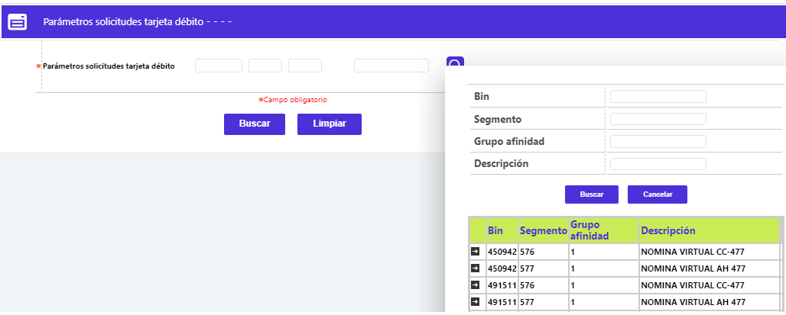
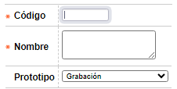
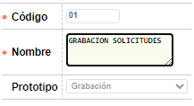
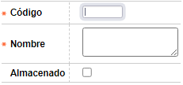
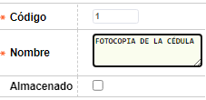

Parámetros de solicitudes
Mediante esta función se permite la consulta y mantenimiento de las tablas que contienen los parámetros que determinan las diferentes clases de solicitudes y las etapas que se deben cumplir.
El formulario inicial contiene dos bloques de ingreso de parámetros: Etapas y Documentos. Cada uno con las opciones Actualizar, Eliminar, y Adicionar. Adicionalmente, en la parte superior se ubican las otras opciones pertenecientes a los Parámetros de solicitudes: Filtros negación, Funcionarios, Calificación, Negación, Variables cupo, y el Globo de localización.
Etapas: Conjunto de campos en los que se codifican las diversas etapas que deberán surtir las solicitudes; cada etapa se asocia a un prototipo interno de OpenCard, siendo factible que un mismo prototipo pueda tener asociados dos o más etapas ya que se le ofrece a la entidad la posibilidad de dar un nombre diferente a cada una de ellas, dependiendo del tipo de producto.

Adicionar: Si el usuario invoca la opción Adicionar se despliega un formulario con los siguientes campos:

|
Código |
Campo alfanumérico de 4 posiciones, obligatorio, en el que se registra el código asignado a cada una de las diferentes etapas por las que deben transitar las solicitudes. |
|
Nombre |
En este campo alfanumérico de 60 posiciones, obligatorio, se debe registrar el nombre o breve descriptivo de cada etapa codificada. |
|
Prototipo |
Campo obligatorio que posee lista de valores adjunta de la que debe seleccionarse el código interno con el que el sistema gestiona la correspondiente etapa. Como ya se mencionó, un mismo prototipo puede tener asociadas dos o más etapas, o lo que es lo mismo, diferentes etapas definidas por la entidad pueden estar asociadas a un mismo prototipo. |
Actualizar: Si el usuario invoca la opción Actualizar se despliega un nuevo formulario en el cual los únicos campos modificables son: Nombre, y Prototipo.

Documentos: Conjunto de campos en los que se relacionan los diferentes documentos que pueden ser requeridos a manera de soporte en proceso de evaluación de cada solicitud. En la opción Etapas de los Parámetros solicitudes por producto, se define cuáles de estos documentos son requeridos en cada una de las etapas.

Adicionar: Si el usuario invoca la opción Adicionar se despliega un formulario con los siguientes campos:

|
Código |
Campo numérico de 3 dígitos obligatorio en el que se registra el código de cada uno de los documentos potencialmente requeridos a los clientes a manera de soporte. |
|
Nombre |
Es este campo alfanumérico de 60 posiciones, obligatorio, debe incluirse el nombre o breve descriptivo de los documentos codificados. |
Actualizar: Si el usuario invoca la opción Actualizar se despliega un nuevo formulario en el cual el único campo modificable es: Nombre.

Filtros |Funcionarios | Calificación| Negación | Variables cupo| Globo de localización